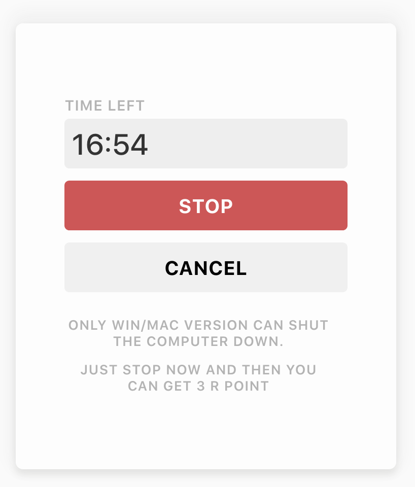
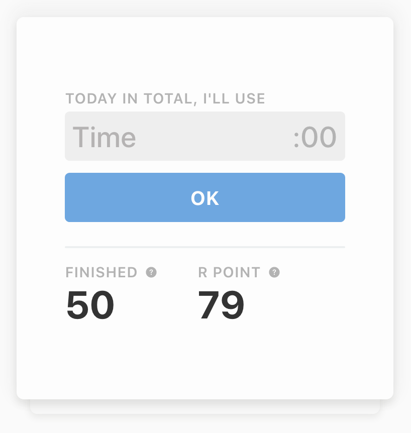
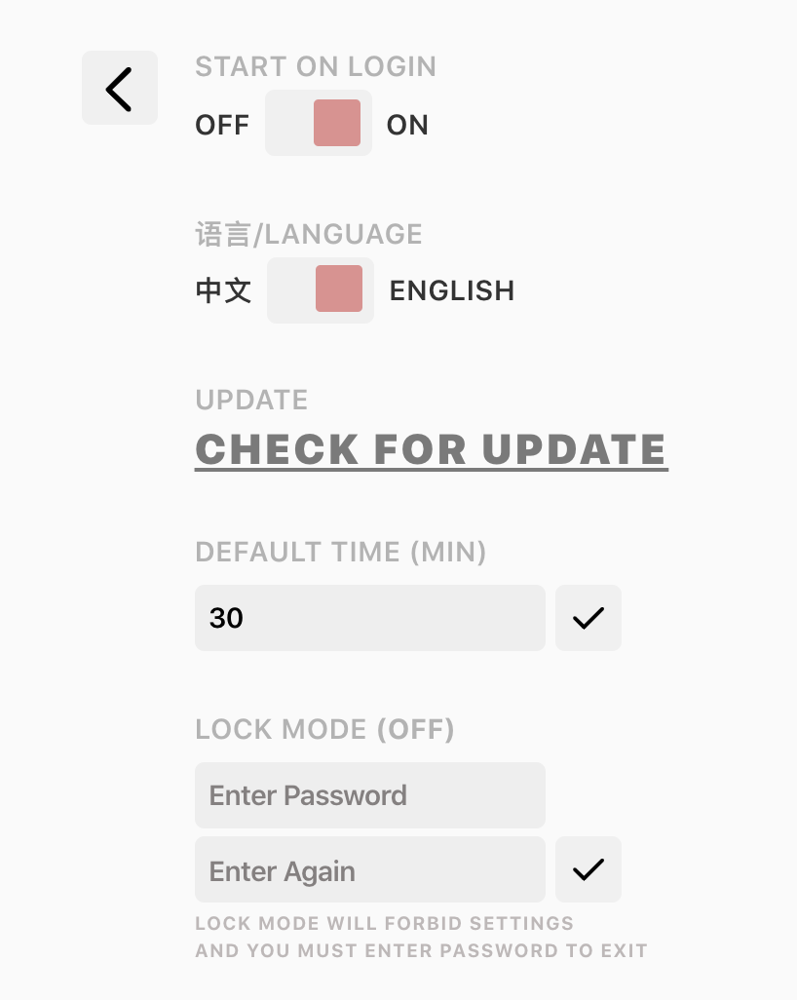

Mr Noplay enters fullscreen kiosk mode on start, so that you're able to set your time concentratedly before start.

Every Minute in Control
You can always get a glimpse of the time left with the float window. But don't worry about overtiming, we'll notify you, and shut the computer down after 10 min's overtime. And in work mode, if you need more time, you could use R PointAn exciting coin system inside Mr Noplay to get some.

Through Today
Today View allows you to set a total time limit for the day, and user will get trapped in Mr Noplay after the time rans out. But of course, you can use R PointAn exciting coin system inside Mr Noplay to get extra time.

More after Download
Lock Mode, Start on Login, Default Time... and a lot more! And the app is still updating and polishing.